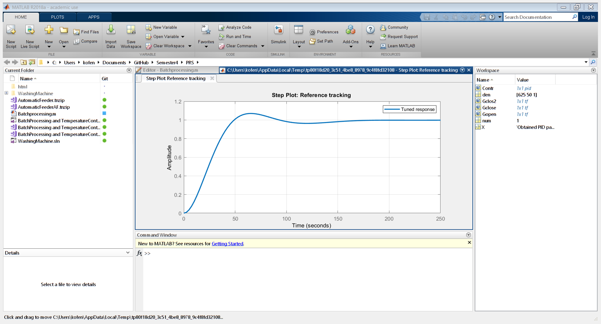

close all;
clearvars;
num=[1];
den =[625 50 1];
Gopen=tf(num,den);
figure(1);
step(Gopen);
grid on
hold on
Contr= pidtune(Gopen,'PID');
X =('Obtained PID parameters:');
disp(X);
Contr
Gclose= feedback(Contr*Gopen,1);
step(Gclose);
Contr.Kp=6.902;
Contr.Ki=0.189;
Contr.Kd=63.03;
Gclos2= feedback(Contr*Gopen,1);
step(Gclos2);
title(['PID Controller Kp = ',num2str(Contr.Kp),' Ki = ',num2str(Contr.Ki),' Kd = ',num2str(Contr.Kd)]);
legend('Open-loop response','Standard PID response', 'Modified PID response');
pidTuner(Gopen);
Obtained PID parameters:
Contr =
1
Kp + Ki * --- + Kd * s
s
with Kp = 2.05, Ki = 0.0582, Kd = 17.5
Continuous-time PID controller in parallel form.
